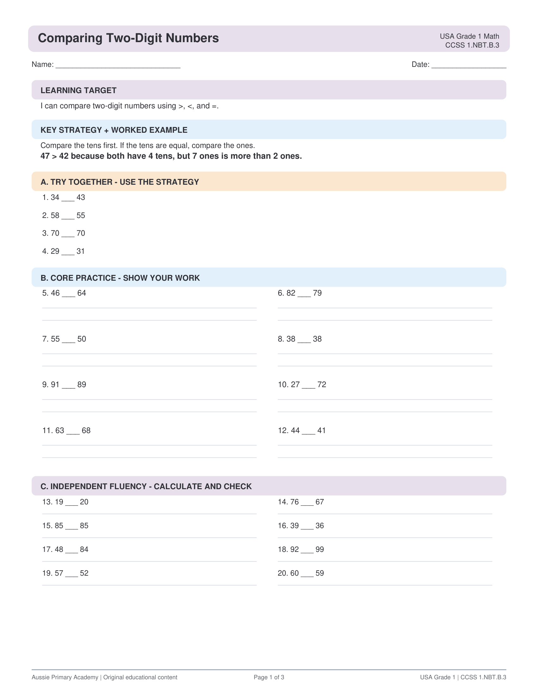

What's Included
- Two-digit number comparison tasks
- Place-value focused layout
- Greater than / less than / equal to practice
- Teacher answer key
USA · Grade 1 · Math · Free Printable
Compare two-digit numbers using tens and ones place value.

This Grade 1 worksheet helps students compare two-digit numbers by looking at tens and ones. Learners practise using greater than, less than and equal to symbols correctly.
Supports CCSS 1.NBT.B.3 — Compare two two-digit numbers based on meanings of the tens and ones digits, recording the results of comparisons with the symbols >, =, and <.
Yes. Download and print free for classroom and home use.
Yes. The PDF includes a teacher answer key.
Yes. Use Fit to printable area. Also works on A4.